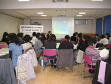

| 【日 時】 |
11月27日(木)10:30～14:30 |
| 【場 所】 |
さいたまコープ・コーププラザ浦和3階会議室 |
| 【出席者】 |
28人(さいたまコープ、ドゥコープ、医療生協さいたま、さいたま住宅生協、勤労者生協、埼玉県生協連)
畜産女性いきいきネットワーク埼玉：6人 |
＜新井会長あいさつ＞
今年も生協ネットワーク協議会では“広く地域の中でつながりあうために”を総合テーマに学習や見学・実習等すすめてきました。今日は“畜産女性いきいきネットワーク埼玉”の方々を初めてお迎えし、交流することができうれしく思います。有意義で楽しい一日になるよう共に学び交流を深めましょう。
|  |
1. |
地産地消の学習 |
| （１） |
埼玉県における地産地消の取組みについて
講師：埼玉県農林部流通販売課より
埼玉農業の現状やフードマイレージ、地産地消月間や直売所、県産農産物サポート店、ふるさと認証商品、学校給食、ブランド化推進品目などについて |
| （２） |
埼玉県における地産地消の取組(畜産編)
講師：埼玉県農林部畜産安全課より |
| |
牛乳、豚肉、鶏卵などが生産されるまで、県のブランド畜産物と主な取扱店について |
| 2. |
埼玉県産米｢彩のかがやき｣と生協お奨め商品の試食 |
| 冷凍ケーキ・コーヒー・お茶・お惣菜(さいたまコープ)、国産材料にこだわったインスタント味噌汁(ドゥコープ)、土壌にもこだわった新鮮野菜の手作り浅漬(勤労者生協) |
| 3. |
交流･･･テーマ｢地産地消｣ |
| 畜産女性いきいきネットワーク埼玉の白石会長のあいさつと出席者の紹介の後、昼食をはさんで交流を行いました。初めての交流だったこともあり、酪農・養豚・養鶏の仕事内容など交流の時間が足りないほどでした。各テーブルで質問攻めにあった生産者の皆さんが、それぞれ畜種に対する熱い思いを語ってくださり、なごやかな交流会になりました。“畜産女性”から｢消費者の皆さんと直接交流できる機会が持ててよかった｣と感想をいただきました。 |
|